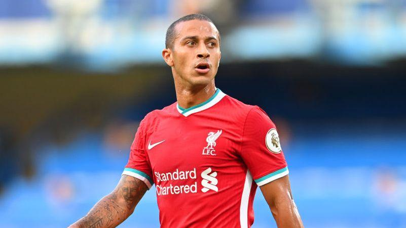
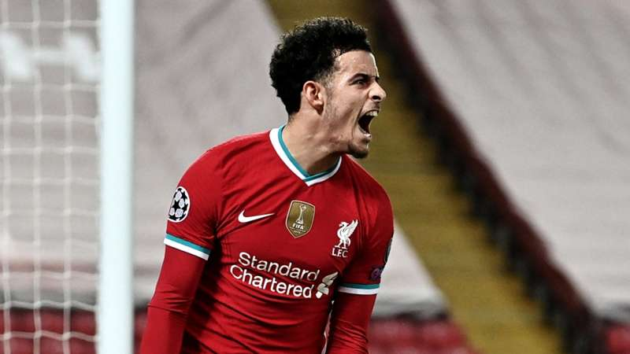
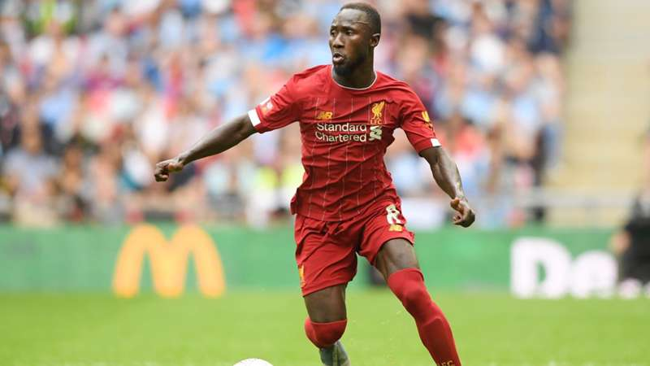

【EPL21-22】シーズンプレビュー
- EPL
- Liverpool
ついに新シーズン開幕ですね。
昨シーズンは、アストン・ヴィラに7失点したり、負傷者が続出したり、Anfieldで6連敗したり、スーパーリーグ構想で騒動が起きたり、アリソンが決勝ゴール決めたりと、書ききれないくらい色々なことが起こりました。
圧倒的強さでプレミア初優勝を果たした翌シーズン、さぁ連覇だ！リーグとCLの2冠だ！と意気込んで臨んだはずなのに、CL権が怪しい事態になるなんて誰が予測できたでしょうか。
そんなことがあったのに、最終的には大逆転で3位フィニッシュするというのもリバプールらしい。
本当に応援してて楽しいチームですよね。
さて、無事CL権を手にしてのシーズン終了でホッとしていたのも束の間、Euroやらオリンピックやら見ているといつの間にか来シーズンの開幕が近づいてました。
というかもう明日開幕です。
今回は、新シーズンに向けて、思っていることをつらつらと書いていきます。
負傷者の復帰の影響
昨シーズンは守備陣を中心に負傷者が続出しました。
主力級CB全員がシーズン絶望の怪我を負うとは、クロップも含めて誰も予想できなかったでしょう。
ゼニトに移籍したロヴレンを恋しく思った人も多いのではないでしょうか。
そんな負傷者達は、全員シーズンオフ中に無事復帰を果たし、さらに、RBライプツィヒから3600万£（約56億円）でイブラヒマ・コナテを獲得。
これにより、守備陣容は一転して世界トップレベルに。
ビッグクラブでスタメンを張れるレベルのCBが4人もいるのはヤバすぎますよね。
SBもすでに両サイドにワールドクラスがいますし、ツィミカスは未だ謎ですが、ギリシャリーグでの年間MVPですし、プレシーズンでも好調のようです。
ゴメスもSBでのプレーが可能ですし、多少の負傷離脱には十分対応できそうです。
昨シーズンのような、同じポジションが全滅なんてことはそうそう起きないので、ひとまずは安心でしょう。
負傷者の復帰は、守備はもちろんですが、チーム全体の攻撃力にも良い影響が出るでしょう。
DFラインが安定することで他のメンバーは安心して攻撃に比重をかけれるようになります。
実際、守備に追われることが多かった昨シーズンはSBの攻撃参加が少なくなっていました。
アーノルド、ロバートソン共に7アシストに留まり、18-19、19-20シーズンと比較すると大幅に減っています。
（それでも7アシストはチームトップなのですが、、）
 守備に頻繁に戻ってきてくれるマネも得点が少なくなっていましたね。
また、両サイドバックの攻撃参加に加えて、ファンダイクのチート級のフィードや、マティプの持ち運びなどが加わります。
破壊力抜群の前線に後ろからのフォローが加わるので、昨シーズンより多くの得点が見れるはずです。
守備に頻繁に戻ってきてくれるマネも得点が少なくなっていましたね。
また、両サイドバックの攻撃参加に加えて、ファンダイクのチート級のフィードや、マティプの持ち運びなどが加わります。
破壊力抜群の前線に後ろからのフォローが加わるので、昨シーズンより多くの得点が見れるはずです。
クロップは就任時に代名詞であるゲーゲンプレッシングを導入しましたが、その後も毎年少しずつ戦術に変化を加えてきていました。
就任当初とはIHの役割も変化してきていますし、最近ではポゼッションの要素を追加したり、VARの導入によって極端なハイラインを敷いています。
もしかしたら昨シーズンにも何か変化を加えようとしていたのかもしれません。しかし、予想外の負傷者の続出により、現存戦力でどうにか試合を乗り切るという対応をせざるを得なくなり、変化を加えるどころではありませんでした。
もちろん、変化を加える予定があったのにできなかったのではなく、そもそも変化を加える予定はなかったという可能性もありますが。
フルメンバーが揃った今シーズン、昨シーズンやりたかったけどできなかったことも含めて何か新しい要素を導入してくるのでしょうか。
例えば、4-2-3-1システムの採用とか。昨シーズンも数回採用していましたが、本格的に導入してくるかもしれません。
南野にとっては4-2-3-1の方が適正ポジションが多いと思うので個人的にはだいぶ期待しています。
フロントスリーは崩れるのか
サラー、マネ、フィルミーノは、圧倒的な得点力で今まで得点を量産してきました。
このフロントスリーは、それぞれの役割も明確でお互いの連携もよく取れています。
それ故に、世界でも指折りの攻撃力を誇っており、リバプールにとって代えの効かない存在です。
しかし、今後はこの「代えの効かない存在」であることが少しずつ問題点になっていきます。
3人とも30歳近くなりコンディション調整も難しくなっていくだろうし、いずれは移籍していってしまうでしょう。
そうなったときに急な変化が起きてしまうことを避けるためにも、今のうちから少しずつ新しい風を吹き込んでおく必要があります。
その点、昨シーズンのジョタの活躍は嬉しい誤算でした。
フロントスリーのバックアップとし、徐々にスタメンに上げていくという計画で獲得したと思われますが、デビュー戦から獅子奮迅の活躍を見せてくれました。
リーグでの得点は2桁にギリギリ届かなかったですが、一気にKOPの心を鷲掴みにしてしまいました。
 データからも分かる通り、ジョタは決定力が非常に高く、少ない時間でもチャンスに絡み試合を決定づけてくれます。
ジョタが怪我で離脱している期間の勝率が明らかに下がっているも無関係ではないでしょう。それにしてもサラーの得点能力はやはりすごいですね。
データからも分かる通り、ジョタは決定力が非常に高く、少ない時間でもチャンスに絡み試合を決定づけてくれます。
ジョタが怪我で離脱している期間の勝率が明らかに下がっているも無関係ではないでしょう。それにしてもサラーの得点能力はやはりすごいですね。
まだジョーカー的な使われ方が多いですが、新シーズンではフル出場する機会も増えるはずです。
また、ジョタ意外にもチェンバレン、南野、エリオットもプレシーズンマッチで好調を維持しています。
チェンバレンは偽9番的な使われ方をしているようですね。アンカーララーナみたいなことになるかもしれませんが。
フロントスリーに割って入ってくるのは誰なのか、注目です。
南野拓実の今後
南野のリバプールでの挑戦も3シーズン目に突入しました。
アジアへのマーケット拡大など、経営面でチームの助けになってはいるが、プレー面でチームを助けれる存在になれているとは言い切れない現状です。
しかし、ポテンシャルの高さは随所で発揮できており、特に20-21シーズン第14節のクリスタルパレス戦でのパフォーマンスは圧巻でした。
先制点のシーンももちろんですが、ライン間での動きや見事なデコイランでフィルミーノの２得点を演出していました。
この試合をきっかけに出場機会が増えるかと思いきや、その後は一度も起用されることなくサウサンプトンへの移籍が決定。
クロップはこのことについて、「南の本人の問題ではなく、故障者の続出により前線に高さのある選手を起用する必要があった。
しかし、出場機会をふやして自信をつけてもらうために、戦術コンセプトがあうサウサンプトンへのローン移籍を許可した」と説明しています。
ローン条項に買取オプションはつけていなかったことから、クロップが南野を今後のプランに含めていることは確実でしょう。
負傷者が戻ってきたことで前線に高さのある選手を起用する必要もなくなりましたし、1月にはアフリカネーションズリーグがあり、マネとサラーが数試合欠場することが確定しています。
昨シーズンより多くの出場機会を得られるのは確実と言っていいでしょう。
フィジカル負けすることが多かった印象でしたが、肉体改造をしたのか以前よりがっしりとした体型になっているように見えます。
移籍の噂が出ていることも事実です。今シーズン、得られたチャンスを最大限に活かして目に見える結果を出し、くだらない噂を全て吹き飛ばして欲しいです。
注目選手
今シーズンの注目選手を筆者が勝手に3人選出しました。

1人目はチアゴ・アルカンタラです。
リバプールにしてはかなり珍しいビッグネームの獲得でKOPを湧かせましたが、チアゴ本人がプレミアに慣れるのに苦労したと語っていた通り、昨シーズンの前半戦ではパフォーマンスが批判されることもありました。
しかし後半戦では、ファビーニョがアンカーに戻ったことにより守備の負担が軽減され、本来のパフォーマンスが出せるようになってきていました。
最後10試合での巻き返しは間違いなくチアゴの活躍があったからこそであり、個人的には全試合チアゴがMoMになっていてもおかしくはなかったと思っています。
ボールを預ければ必ず相手のプレスを掻い潜り前方向にボールを進めてくれるチアゴがいたのは、若いDF陣にとって相当助かったはずです。
持ち味は、体の向きとは違う方向に正確に出されるパス。
加入当初は、相手だけでなく味方もこのパスに意表を疲れるシーンが少し見られましたが、加入から1年経ってチアゴがチームに馴染み、チームメイトもチアゴのパスに馴染んできた新シーズン、どのような活躍を見せてくれるのでしょうか。

2人目はカーティス・ジョーンズ。リバプールが誇るスカウサーであり、昨シーズンブレイクした若手のうちの1人です。
持ち味はボールのキープ力と前への推進力。数人に囲まれても簡単にボールを奪われることがなく、1人でボールを前に運ぶことができます。
ポジショニングも上手で、ボールを失ってもすぐにプレスにいくことができます。
まだ20歳ですが、クッロップからの信頼は厚く、 のようなビッグマッチでもスタメン起用されるなど、期待の若手です。

最後に、ナビ・ケイタです。
個人的に大好きな選手で、期待を込めて選出しました。
「今年の補強はナビ・ケイタの覚醒だ。」と毎年言い続けてきましたが、そろそろ実現しても良いのではないでしょうか。
能力が高いのは確かで、得意のドリブルでヌルヌルと相手を躱していくのは見ていて爽快。
また、ブンデス時代はペナルティ外からのゴールが多かったそうで、ミドルシュートも得意らしいです。たしかにチェルシー戦でのミドルとかは強烈でしたね。
ドン引きされた相手に弱いと言われるリバプールで、ミドルシュートと独力突破の2つの武器を兼ね備えた選手が活躍できない訳がない。
中盤の最重要選手であるワイナルドゥムが移籍したにもかかわらず、中盤の補強を行わなかった今夏、既存戦力のレベルアップは必須。
覚醒の舞台は整っています。今年こそ、得意のドリブルで守備陣を切り裂き、雷のようなミドルシュートを突き刺して欲しい。
今のリバプールのスカッドを見る限り、普通のリーグなら十分に優勝できるでしょう。
だけど最近のプレミアはおかしい。負けが1回、勝点98をとっても優勝できないこともありましたし。
他のチームは積極的に補強を行っており、勝点90では安心できません。目指すは勝点114。
昨シーズンまでの結果や移籍状況を見る限り、マンチェスターシティ、マンチェスターユナイテッド、チェルシー、リバプールの4強という形になるでしょうか。
それとも、アーセナル、トッテナムが復活してくるでしょうか。
はたまた、レスター、ウエストハム、ウルヴス、リーズといったチームが割り込んでくるでしょうか。
今から楽しみで眠れません。
移籍期間が終了したら順位予想でもやってみようかと思います。
では、また。